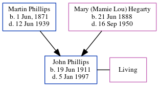

John A Phillips 1911 - 1997
[ Home ] | [ Calendar ] | [ Surnames Index ] | [ Census Index ] | [ Family History ]The 2nd of 6 children of Martin Phillips and Mary (Mamie Lou) Hegarty, John Phillips, the great-uncle of Michele Copp (née Phillips), was born in Atlanta, , Georgia, USA on Jun 19, 19111,2,3,4,5,6. He and was married to Elsie Woodruff.
During his life, he was living in Atlanta Ward 3, Fulton, Georgia in 19201; in Atlanta, Fulton, Georgia in 19302; and in Baldwin3.
He died on Jan 5, 1997 in Atlanta, Fulton , Georgia, USA3,4,5,6 and was buried in Lawrenceville, Gwinnett County, Georgia after Jan 5, 19976.
Parents
- Martin Eugene was born on Jun 1, 1871
- Mary (Mamie Lou) was born on Jun 21, 1888
Citations
- 1920 United States Federal Census Online publication - Provo, UT, USA: MyFamily.com, Inc., 2005. For details on the contents of the film numbers, visit the following NARA web page: NARA. Note: Enumeration Districts 819-839 on roll 323 (Chicago City.Original data - United States of America
- 1930 United States Federal Census Online publication - Provo, UT, USA: MyFamily.com, Inc., 2002.Original data - United States of America, Bureau of the Census. Fifteenth Census of the United States, 1930. Washington, D.C.: National Archives and Records Administration, 1930. T626, 2,667 rol
- Georgia Deaths, 1919-98 Online publication - Provo, UT, USA: The Generations Network, Inc., 2001.Original data - State of Georgia. Indexes of Vital Records for Georgia: Deaths, 1919-1998. Gerogia, USA: Georgia Heatlh Department, Office of Vital Records, 1998.Original data: State
- OneWorldTree Online publication - Provo, UT, USA: MyFamily.com, Inc.
- Social Security Death Index Online publication - Provo, UT, USA: MyFamily.com, Inc., 2006.Original data - Social Security Administration. Social Security Death Index, Master File. Social Security Administration.Original data: Social Security Administration. Social Security Death Inde
- U.S., Find A Grave Index, 1600s-Current Ancestry.com Operations, Inc.
Family Tree
Generated by ged2site. Last updated on Jun 6, 2024